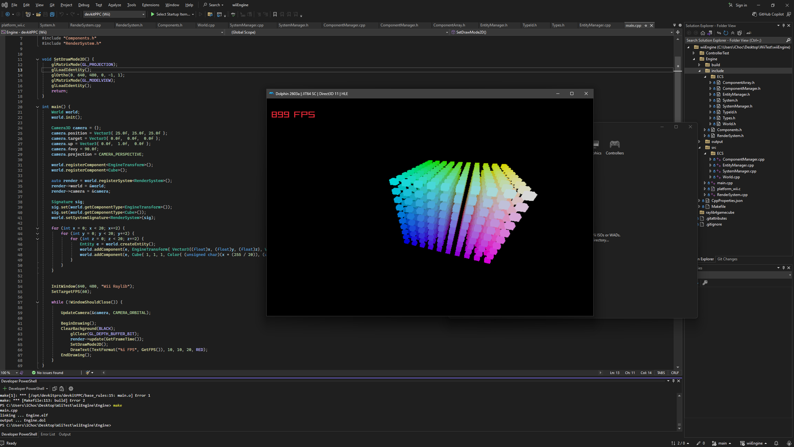
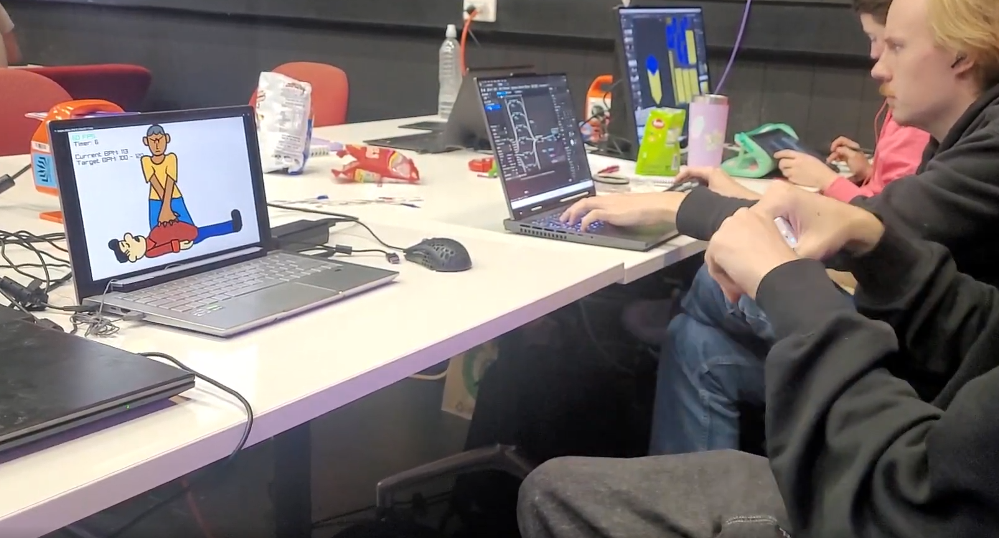
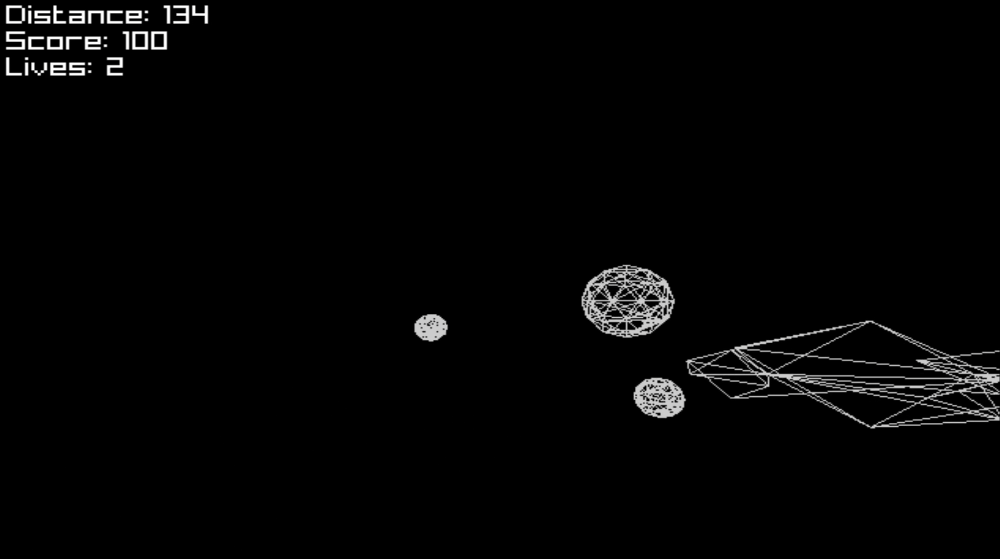

EnGen7

A custom C++ game engine for Generation 7 console homebrew (currently limited to Nintendo Wii), built around an Entity Component System. I've used it to ship a game jam entry and an experimental Balance Board shooter, and I'm currently extending it with 3D rigid-body physics.
Built with
- C++ with devkitPPC / libogc2
- raylib4Gamecube + OpenGX (raylib with an OpenGL 1.1 wrapper for the Wii's GX GPU)
- WPAD / wiiuse for peripherals input
- ASND for sound and music
- Tested on real hardware and in Dolphin
Most of my experience before EnGen7 was inside Unity and Unreal. I wanted to understand what an engine is actually doing underneath, and the Wii is a great (and nostalgic) platform to learn on, with robust homebrew support
Building for constrained hardware has shaped most of my design decisions, from how components are stored to how audio is streamed.
Engine Architecture
EnGen7 follows a classic ECS layout. Entities are just IDs. Components are plain data stored in tightly packed arrays, and systems iterate over every entity whose component signature matches what they need. A World class sits on top as a single facade, so game code never has to talk to the individual managers directly. Component type IDs are generated at compile time, which avoids relying on RTTI, saving memory space.
Games are split into scenes managed by a SceneManager, and a scene's world can be serialised out and loaded back in, including components that aren't plain-old-data.
Rendering
- 2D sprites drawn in Z-order (sorted with a
std::multimap) - 3D model rendering with a follow camera
- Sprite animation system
- Frame-rate independent updates using libogc's hardware timer
Physics
- 2D AABB and circle collision with a QuadTree broad phase
- 3D box colliders with an Octree broad phase
- 2D rigid bodies
- In progress: 3D rigid-body physics
Input
- Wii Remote buttons and IR pointer
- MotionPlus gyroscope with calibration and deadzone
- Wii Balance Board with software tare
- raygui menus driven by the Wii Remote pointer
Audio
AudioManagerfor one-shot sound effectsMusicStreamfor double-buffered music streaming- WAV decoding with dr_wav, playback through the DSP via ASND
Challenges
- No memory protection
- Reading a component from a destroyed entity doesn't throw an error on the Wii, it crashes the console. I had to be deliberate about entity lifetimes, guarding every component lookup and making sure game state couldn't touch an entity after it was destroyed.
- Audio on the Wii's DSP
- raylib's audio module can't link on the Wii, so I wrote my own on top of ASND, using only raylib's decoder headers.
- Rendering on a fixed-function pipeline
- Mixing my own OpenGL matrix setup with raylib's internal matrix tracking caused 3D models to silently vanish. Moving fully onto raylib's camera functions kept the two in sync.
RFDS Game Jam

The first real test of the engine was the RFDS Game Jam, where the team built a collection of motion-controlled medical microgames for the Wii. Each microgame is its own scene, launched from a main menu, and each uses a different Wii input: pointing with the Wii Remote, or physically twisting it using the MotionPlus gyroscope.
Created by
- William Bartlett – Engine programming, Gameplay programming
- Eladio Abarca – Gameplay programming
- Lily Rout – 2D Artist, Designer
Features
- Five microgames plus a main menu, each a separate scene (needle, gauze, bottle, patch and baby-target games)
- Menus built with raygui and driven by the Wii Remote's IR pointer
- Rotation-based gameplay using the MotionPlus gyroscope
Challenges
- MotionPlus calibration
- The gyroscope reports raw sensor counts, not degrees. I added a calibration pass at rest, a scale factor to convert to degrees per second, and a deadzone to stop noise from slowly drifting the rotation.
- Controller reconnection
- MotionPlus silently stayed off if it was enabled before the remote connected or after a Bluetooth drop. I changed it to keep retrying until the expansion was confirmed active.
- IR pointer conflicts
- Enabling MotionPlus switches the Wii Remote into a report mode that drops IR data, which broke the menu pointer. Enabling it only inside the scenes that need it fixed both.
The jam proved that the engine could carry a complete game from start to finish, which is what convinced me to keep building on it.
Starboard

A Star Fox-style on-rails shooter where the only controller is the Wii Balance Board. You steer your ship by shifting your weight. I made it for GFS Academy with the intent of presenting it at the 2026 Experimental Games Conference, and the engine-side work also formed part of my Experimental Practice unit.
Motion controls and exergaming were everywhere 10 to 15 years ago, but outside of VR and health-focused titles they've mostly disappeared. The goal was to take a genre built for a traditional controller and see whether it still holds up when your whole body is the input.
Features
- Balance Board steering using the player's centre of pressure
- 3D player ship with a camera that follows it
- Timed enemy waves, collision, lives and a menu/play/game-over loop
Details
- Reads the board's four pressure sensors and converts them into a -1 to 1 lean on each axis
- Software tare: averages around 60 frames with the board empty and subtracts it from later readings
- Maps the lean into world space, rather than screen pixels, so the camera can track the ship
Challenges
- Getting the board to talk to the engine
- Modern libogc gives the Balance Board its own dedicated channel rather than treating it as an expansion on the first Wii Remote, so it initially always read as disconnected.
- Turning weight into steering
- Most of the development was a loop of standing on the board, adjusting the mapping and testing again until leaning felt like steering and not like fighting the controller.
- Safe entity cleanup
- Clearing the world on game over originally destroyed the player while the game was still updating it, which crashed the Wii. Restructuring the game-state transitions fixed it.